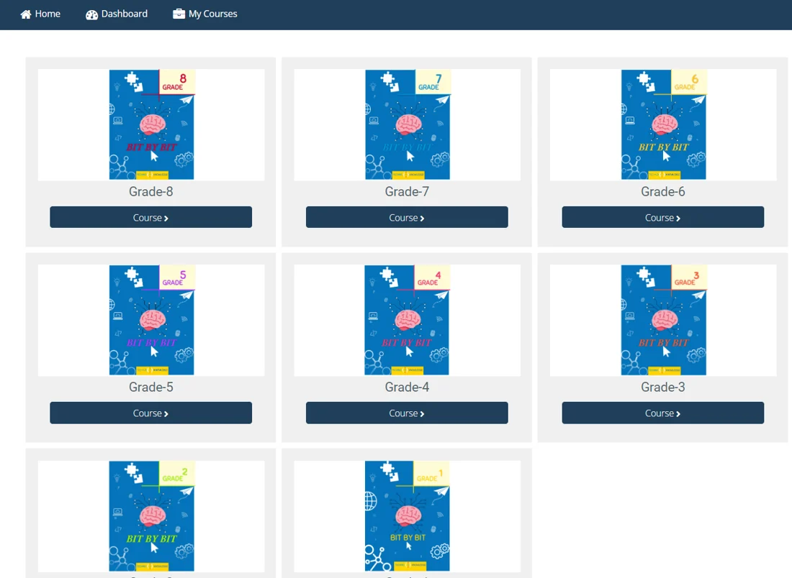
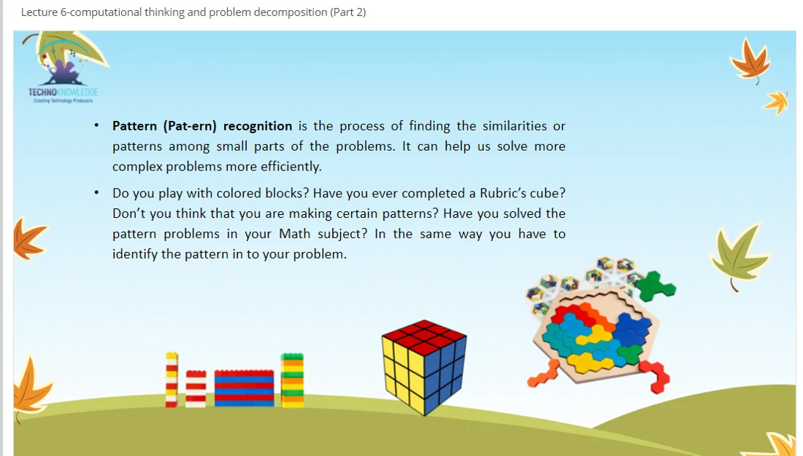

··
Bit-by-Bit books Grades 1 to 8 Computer and coding books for schools in Pakistan
Our computer science series takes students from their first mouse click in Grade 1 to networks, pseudocode, HTML and robotics in Grade 8. Open any book and flip through the sample pages.
- 8 booksGrades 1 to 8
- 8–13chapters per book
- Books + LMSfor every chapter
STEM.org Accredited Curriculum
The Bit-by-Bit series
Tap a book to look inside.
Each preview opens as a flipbook. Turn pages with the arrows, your keyboard or a swipe.
-
Grade 1
- Computer basics
- Tux Paint
- Scratch Jr.
- Robotics
-
Grade 2
- Input & output
- MS Word
- Scratch Jr.
- Robotics
-
Grade 3
- Operating system
- Algorithms
- Scratch Jr.
- Robotics
-
Grade 4
- Files & folders
- PowerPoint
- Programming
- Robots
-
Grade 5
- Internet
- Scratch
- Logical reasoning
- Robotics
-
Grade 6
- Spreadsheets
- Scratch
- Digital citizenship
- Sensors
-
Grade 7
- Excel
- Flowcharts
- HTML
- Advanced robotics
-
Grade 8
- Networks
- Pseudocode
- Text-based coding
- HTML
What each grade covers
From computer basics to code and robots.
Every book builds on the one before, so students grow from using technology to creating with it.
Bit-by-Bit · Grade 1
9 chapters
- The computer, a smart machine
- Uses and functions of a computer
- Parts of a computer
- Computer keyboard
- Computer mouse
- Drawing with Tux Paint
- Problem-solving
- Scratch Jr.
- Introduction to robotics
- Computer lab manual
- Assessments
Bit-by-Bit · Grade 2
9 chapters
- The computer
- Types of computers
- Input parts of a computer
- Output parts of a computer
- Drawing with Tux Paint
- Getting started with MS Word
- Step-by-step solutions of problems
- Scratch Jr.
- Introduction to robotics
- Computer lab manual
- Assessments
Bit-by-Bit · Grade 3
8 chapters
- Hardware and software
- Operating system
- Creating a storyboard with Tux
- Getting started with MS Word
- Computational thinking
- Designing the algorithm
- Scratch Jr.
- Getting started with robotics
- Computer lab manual
- Assessments
Bit-by-Bit · Grade 4
10 chapters
- Uses of computer
- Processing and memory devices
- Managing files and folders in Windows
- Spelling and grammar with MS Word
- Learning about PowerPoint
- Logical reasoning
- The logical structure of algorithm
- Computer programming
- Scratch Jr.
- All about robots
- Assessments
Bit-by-Bit · Grade 5
9 chapters
- Characteristics of computers
- Computer memory
- Knowing the Internet
- MS Word objects
- MS PowerPoint objects
- More about logical reasoning
- Knowing Scratch
- Programming in Scratch
- Robotics
- Assessments
Bit-by-Bit · Grade 6
13 chapters
- Computer fundamentals
- Computer systems
- Operating system
- Creativity with Paint
- Working with spreadsheets
- Problem-solving
- Computer programming
- Control structures
- Programming with Scratch
- Logical structures with Scratch
- Digital citizenship
- Entrepreneurship
- Robotics and sensors
- Assessments
Bit-by-Bit · Grade 7
11 chapters
- ICT and emerging technologies
- Calculations in MS Excel
- Understanding email
- Algorithmic thinking
- Flowchart designing
- Numbering system
- Gamification through Scratch
- Creating webpages using HTML
- Digital citizenship
- Entrepreneurship in the digital age
- Advanced robotics
- Assessments
Bit-by-Bit · Grade 8
11 chapters
- Understanding networks
- Data communication
- Charts in MS Excel
- More about numbering systems
- Writing pseudocodes
- The concept of nesting
- Introduction to text-based programming
- Getting started with HTML
- Digital citizenship
- Entrepreneurship
- Robotics
- Assessments
Inside every book
Made for the classroom, not just for reading.
Clear chapters
Every chapter ends with a recap, things to do, think & talk, and a teachers' guide.
Hands-on activities
Worksheets, exercises and practice tasks students complete on paper and on the computer.
Coding and robotics in every grade
Scratch Jr., Scratch, HTML and robotics, building step by step from Grade 1 to Grade 8.
Assessments included
Every book ends with assessments. Grades 1 to 3 also include a computer lab manual.

Books and LMS together
The book in the classroom. The LMS for everything around it.
Schools can choose the books, the LMS, or both. Together they give teachers a complete, ready-to-teach program.

For teachers
- Curriculum pack for every grade on the LMS
- Lectures, lesson plans and a schema of work
- Interactive videos with voiceovers
- Extra assessments and assignment sheets
For students
- Digitized curriculum on the LMS
- Interactive assessments and assignments
- Real-time results and student profiles
- Monthly or annual subscription
Common questions
What principals ask us?
Can we order the books only?
What do teachers get with the books?
Do you train our teachers?
Is there a digital version for students?
How do we see the full books?
Bring Bit-by-Bit to your school
Get a quote for your grades.
Tell us your grades and number of students. We reply within one working day.